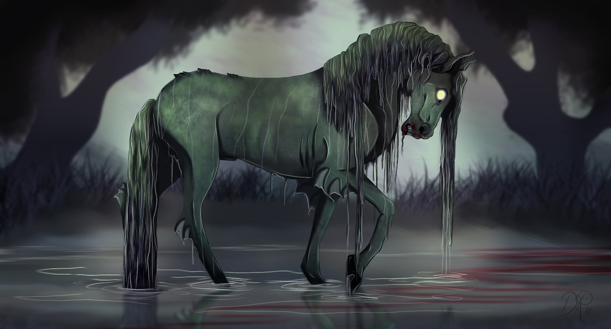
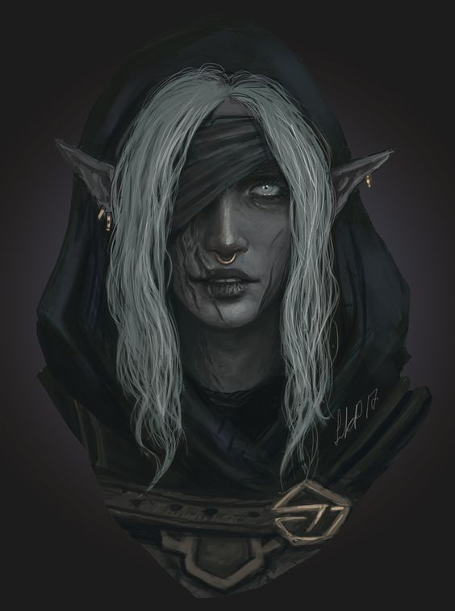

Force

Résistance
Dextérité

Magie

Ingénierie

Environnement : Tertres-du-Temps - Val fangueux
Durée de vie moyenne : 350 ans
Taille : M
Système politique : Sectaire, dévoué à Ga'ar
Statut politique : -
Relations hostiles : Elfes
Alliés : Les peuples sous la tutelle de Ga'ar, bien qu'il y ait des divergences d'opinions
Croyance : Ga'ar
Force
Résistance
Dextérité
Magie
Ingénierie
Capacités innées : Sens ultradéveloppés et résistance aux poisons
Facilités magiques : Arts occultes, poisons et magie noire
Impossibilités : Lumière et magies pures
Une page sombre de l’histoire fut brûlée et effacée à jamais. La honte peut pousser à omettre des évènements, à mentir, à se voiler la face. Autrefois, quand Ga’ar envoya ses troupes conquérir l’Yndrill, des elfes dissidents, adeptes des ténèbres lui portèrent assistance. Avant cela, ils étaient une secte œuvrant dans l’ombre et priant au nom de démons supérieurs. Le roi de l’époque avait tenté de les chasser, sans y parvenir, car ses manœuvres n’avaient été que façade pour dissimuler sa propre appartenance au culte.
Profil type : Sans scrupule - Dénué d'empathie - Dévoué au culte - Avare
Alimentation : Viande de bétails chassés et plantes cueillies
Montures : Kelpie
De nos jours, les dökkálfars, car c’est ainsi qu’ils sont nommés, ont une peau sombre et servent Ga'ar, maître du val fangeux et de la forêt noire. Les arts occultes n’ont plus aucun secret pour eux et l’honneur ne leur est plus d’aucune familiarité.
Nombre d'OC de cette race sur Yndrill: -